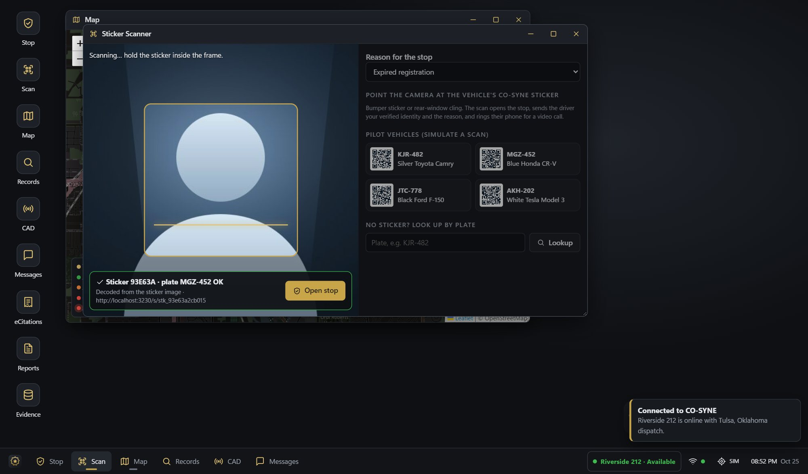
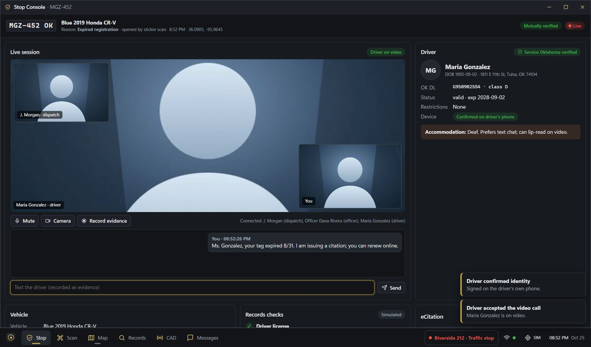
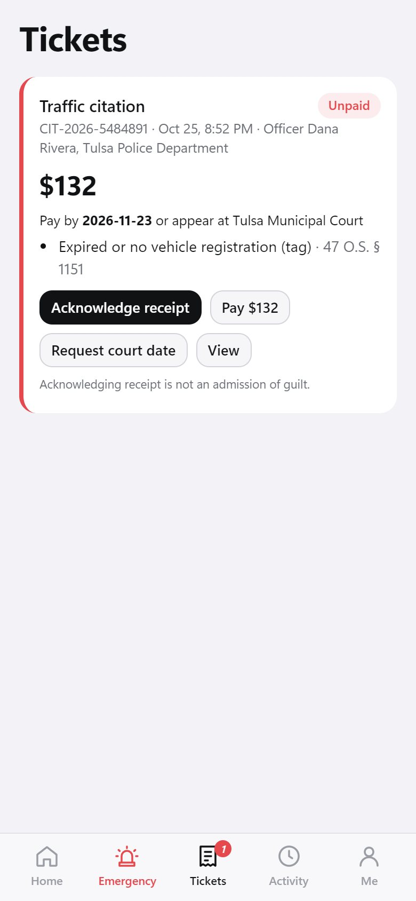
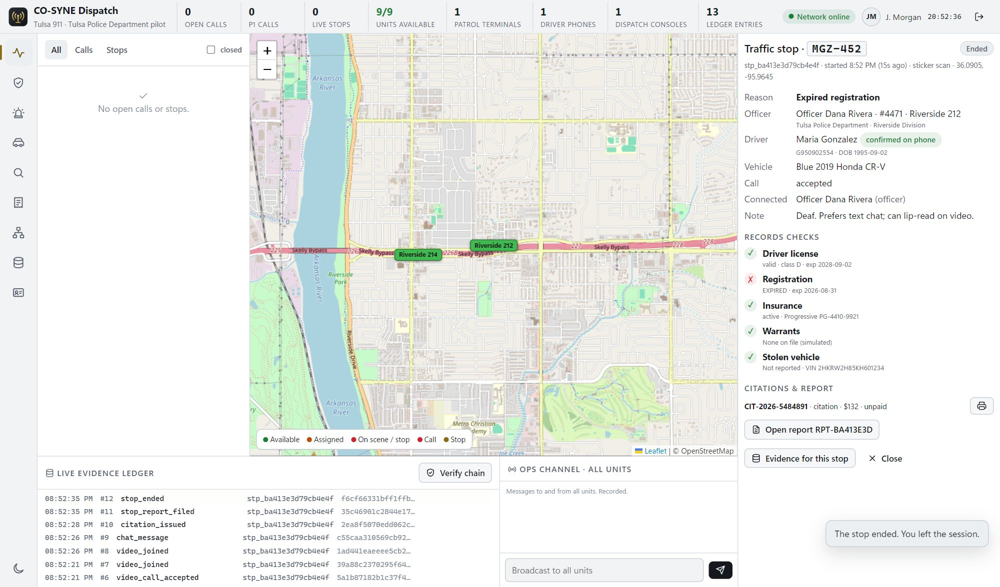
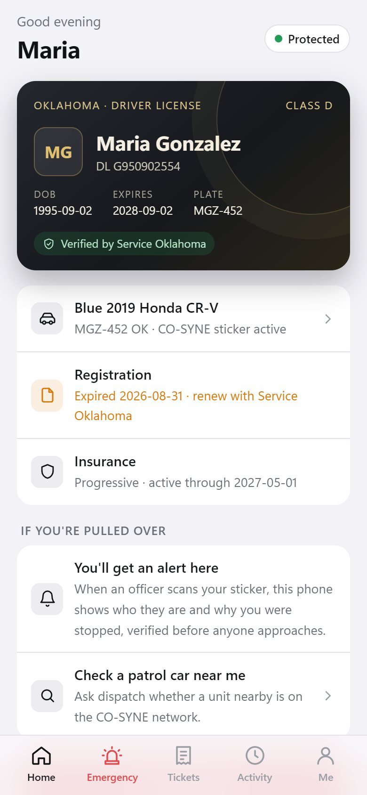
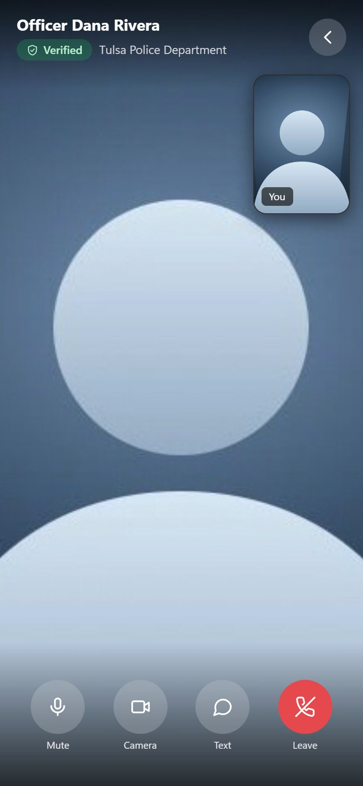

Safer traffic stops, verified both ways.
CO-SYNE connects drivers, officers, emergency responders and dispatch on one real-time network. Before anyone approaches, the driver sees the officer's verified identity and the reason for the stop, and the officer sees the driver's verified license, vehicle and accessibility needs.
- Mutual identity verification, checked on both devices
- Video and text from the vehicle, with dispatch able to join
- Every step sealed in a tamper-evident evidence ledger


Five connected parts. One network.
CO-SYNE is the interface people use; D2ES is the AI-assisted emergency infrastructure underneath. Every component runs on the same verified, real-time core.
Digital Headquarters
The public website, driver registration, accounts, device ordering and agency onboarding.
Learn moreDriver App
Verified digital ID, pull-over alerts, video with the officer, tickets and SOS.
For driversOfficer Terminal
The patrol console: sticker scanner, stop console, records, CAD, eCitations and reports.
For agenciesDispatch Console
Every stop, call and unit live on the map, with drop-in video and the evidence ledger.
For dispatchVehicle Hardware
CO-SYNE bumper and window stickers today; in-vehicle devices on the roadmap.
See hardwareD2ES Core Network
Real-time signaling, AI-assisted call routing, the credential trust registry, and the signed evidence ledger, shared by every app.
A traffic stop on CO-SYNE, step by step
These are the real CO-SYNE apps running a demonstration stop. Select a step to see what each person sees.

The QR on the sticker holds only a link, never personal data.
The driver can also press "Something feels wrong" to alert 911 at any time.

Accessibility notes, such as a driver who is Deaf, are shown to the officer before the conversation starts.

Payments in the pilot are simulated.

Each ledger entry commits to the one before it and is signed, so any later edit is detectable.
Urban and rural centers, with routing to the nearest available unit.
Help, routed in seconds
When a driver needs help, one tap sends their location, vehicle, verified ID and accessibility needs straight to emergency services.
- 1 · Driver alertMedical, crash, vehicle fire, "I'm in danger", being pulled over, or breakdown.
- 2 · Data transmissionReal-time location keeps streaming to responders until the alert closes.
- 3 · Rapid responseThe nearest center and the nearest available unit per service are assigned, with an ETA. An AI second pass can add responders or raise priority, never slow the first dispatch.


Built for everyone at the roadside
Know who is stopping you
A verified digital ID on your phone, alerts that tell you who the officer is and why you were stopped, video from your seat, and one-tap emergency.
Get the Driver app Agencies & dispatchSafer stops, complete records
A patrol terminal and dispatch console that verify identity both ways, bring video into every stop, issue signed eCitations, and keep an audit-ready evidence trail.
Solutions for agenciesDesigned so no one has to take anyone's word for it
Signed credentials
Officer credentials are signed by the agency and driver credentials by the state, each bound to a key that never leaves the device.
Mutual verification
Both sides prove possession of their key at every stop. A copied or revoked credential fails, and the driver is warned.
Hash-chained ledger
Every event is chained with SHA-256 and signed with Ed25519, so tampering breaks the chain and is detectable.
Recordings stay put
Video recordings stay on the device that made them; only their fingerprint is anchored in the ledger.
Build. Demonstrate. Pilot. Launch.
CO-SYNE is in its pilot phase in Tulsa, Oklahoma, with the full platform running end to end.
- Phase 1 · Complete
Build
Driver app, officer terminal, dispatch console, main admin and the D2ES core network.
- Phase 2 · Complete
Demonstrate
Live end-to-end demonstrations of verified stops, video, eCitations and sealed reports.
- Phase 3 · In progress
Pilot
Tulsa, Oklahoma pilot with installable apps, phone alerts and agency onboarding.
- Phase 4 · Next
Launch
Production identity issuers, App Store and Google Play apps, vehicle hardware and new regions.
Our mission is to make emergency services more efficient and effective by connecting drivers with responders in real time.
Founded in 2014, our team is dedicated to transforming emergency response through AI and our Driver to Emergency Services (D2ES) technology, with faster response, greater transparency in law enforcement, and safer roads for everyone.
Innovation
We commit to continuous improvement in how drivers and responders connect.
Reliability
Our solutions must be dependable in the moments that matter most.
Safety
We put the well-being of individuals and communities first, on both sides of every stop.
See CO-SYNE in action
Book a walkthrough for your agency or dispatch center, or open the live demo apps and run a verified stop yourself.